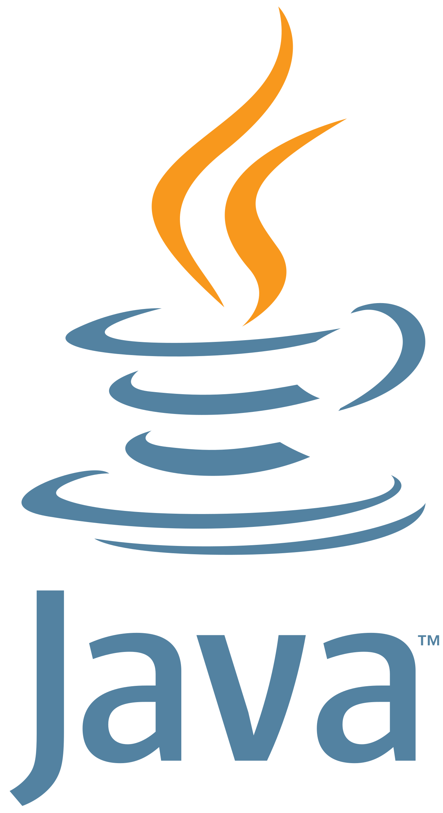
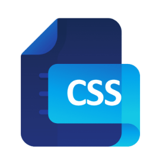
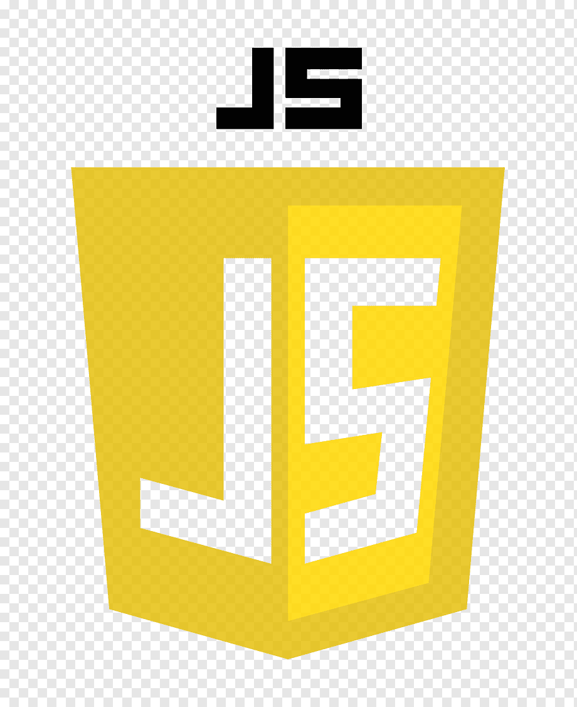
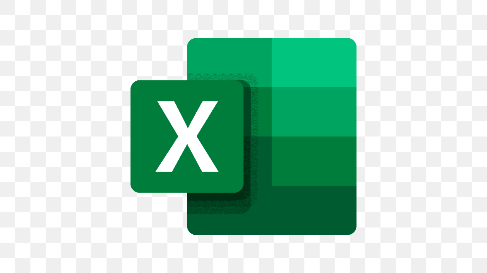

Engenheiro Formado • Desenvolvedor em formação
Construindo soluções web com clareza, lógica e tecnologia.
Sou João Marcos, estudante de Análise e Desenvolvimento de Sistemas. Este portfólio reúne minha evolução em desenvolvimento, projetos acadêmicos e habilidades com programação e ferramentas digitais.
Clean Tech Portfolio
HTML • CSS • JavaScript • Java • C
Tecnologias e Ferramentas
Stack em evolução para criar interfaces e sistemas melhores
Conhecimentos que venho praticando em projetos acadêmicos, estudos e organização de soluções digitais.

C++

Java

HTML

CSS

JavaScript

Excel
VS Code
Projetos e aprendizado
Do raciocínio lógico à interface responsiva
Meus projetos conectam fundamentos de programação, orientação a objetos, desenvolvimento web e melhoria contínua de processos.